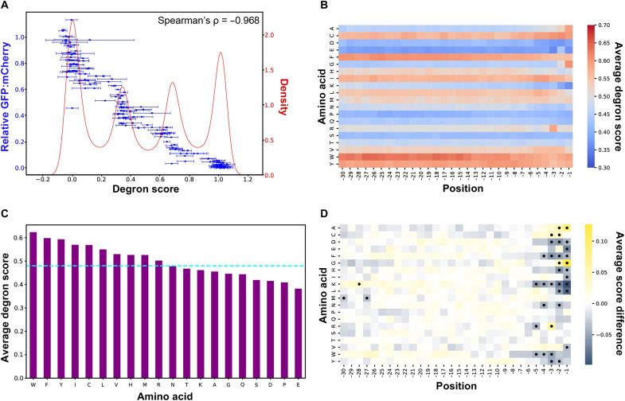

Đảo ngẫu nhiên thứ tự các acid amin trong một đoạn peptide, rồi đưa lại vào mô hình tốt nhất hiện có. Điểm không đổi. Không phải gần như không đổi — không đổi. Bài này giải thích vì sao, và vì sao đó không phải lỗi phần mềm.
Phần lớn bài toán tin sinh học ở mức residue là phân loại nhị phân mất cân bằng: vị trí này có bị phosphoryl hóa không, có phải vị trí gắn ATP không. Nhãn dương hiếm, nhãn âm đáng ngờ, và nửa công sức đổ vào việc chọn chỉ số cho đúng (xem bài giảng 08).
Bài toán degron thì khác, và khác theo hướng dễ chịu:
Phân bố nhãn của bộ chính: trung bình 0,481, độ lệch chuẩn 0,376, khoảng từ −0,144 tới 1,132. TỰ ĐO Không có lớp nào hiếm cả — đây là hồi quy thật.
| Pearson r | Spearman ρ | |
|---|---|---|
| Hỏi gì | Hai đại lượng có quan hệ tuyến tính tới mức nào | Hai đại lượng có cùng thứ hạng tới mức nào |
| Tính trên | Giá trị gốc | Thứ hạng của giá trị |
| Nhạy với | Giá trị ngoại lai, phép biến đổi thang | Chỉ quan tâm thứ tự, bỏ qua thang |
| Dùng khi | So trong cùng một thang đo | So giữa hai thang khác nhau |
Hai sàng lọc dùng hai thang khác nhau: một bên là điểm 0–1, bên kia là PSI 1–6 (xem bài nền 2). Khi huấn luyện trên sàng lọc này rồi kiểm tra trên sàng lọc kia, Pearson sẽ bị phạt chỉ vì hai thang không trùng nhau — dù mô hình xếp hạng hoàn toàn đúng. Vì vậy phép thử chuyển giữa hai sàng lọc phải báo Spearman. SUY LUẬN
Đây là chỗ rất dễ nói quá. Pearson 0,87 không có nghĩa “đúng 87%”.
Lấy một đoạn peptide. Có hai cách mô tả nó bằng số:
Đếm mỗi loại acid amin xuất hiện bao nhiêu lần. Kết quả là một vector 20 chiều. Mất hoàn toàn thứ tự.
LAFRYV → A:1, F:1, L:1, R:1, V:1, Y:1
Giữ nguyên vị trí từng residue. Cho phép nói “F đứng ngay sau A” — tức là cho phép biểu diễn motif.
LAFRYV ≠ VYRFAL
Sinh học của degron là chuyện motif: E3 nhận ra một mẫu cụ thể, theo một thứ tự cụ thể. Vậy ta chờ đợi rằng mô hình giữ thứ tự sẽ thắng mô hình chỉ đếm. Thực tế không như vậy — và đó là nội dung còn lại của bài.
Một hàm f trên chuỗi gọi là bất biến hoán vị nếu đảo thứ tự đầu vào không làm đổi đầu ra: f(x₁…x_L) = f(x_σ(1)…x_σ(L)) với mọi hoán vị σ.
Kênh chính của mô hình PAP gồm hai bước: một lớp tích chập một chiều với cửa sổ bằng 1, rồi một lớp gộp trung bình toàn cục. Hãy xem điều đó dẫn tới đâu.
Bước 1 — tích chập cửa sổ 1. Cửa sổ bằng 1 nghĩa là mỗi vị trí chỉ nhìn chính nó, không nhìn hàng xóm. Nên đầu ra tại vị trí i là h_i = g(x_i), trong đó g là cùng một hàm cho mọi vị trí. Không có chỗ nào để thông tin “ai đứng cạnh ai” lọt vào.
Bước 2 — gộp trung bình. z = (1/L) · Σᵢ h_i = (1/L) · Σᵢ g(xᵢ)
Bước 3 — nhóm lại theo loại acid amin. Gọi n_a là số lần acid amin a xuất hiện trong đoạn. Tổng trên có thể viết lại:
z = Σa ∈ 20 acid amin (n_a / L) · g(a)
Vế phải chỉ chứa số đếm n_a. Thứ tự biến mất hoàn toàn. Mọi lớp phía sau chỉ nhận z làm đầu vào, nên toàn bộ kênh là một hàm của thành phần acid amin và không gì khác. Đảo thứ tự thì kết quả không thể đổi.
Bấm nút để đảo ngẫu nhiên thứ tự đoạn peptide. Hai “mô hình” đồ chơi chạy song song: một cái chỉ đếm thành phần, một cái dò cửa sổ ba residue liền nhau.
—
Mô hình A — chỉ đếm thành phần (giống kênh nội của PAP):
Mô hình B — dò motif ba residue liền nhau:
Lập luận ở trên là toán học, nên nó phải đúng. Nhưng một lập luận chưa phải bằng chứng rằng mô hình đã công bố đúng là như vậy. Nên mô hình PAP đã được dựng lại từ file trọng số công bố, rồi chạy phép thử đảo thứ tự trên toàn bộ tập kiểm tra.
| Mô hình | Cửa sổ | Pearson holdout | max |Δ| khi đảo | Pearson(gốc, đảo) |
|---|---|---|---|---|
| cnn2w1 — bản mặc định, chính là PAP | 1 | 0,8690 | 4,8 × 10⁻⁷ | 1,000000 |
| cnn2w7 — bản bắt motif, cũng có sẵn trong repo của tác giả | 7 | 0,8722 | 4,9 × 10⁻¹ | 0,901836 |
rerun_pap.py trong ghi chú audit.Đọc bảng này theo hai chiều, và chúng cắt ngược nhau:
Kênh nội cnn2w1 bất biến hoán vị và đạt Pearson 0,8239 khi chấm riêng. PAP đầy đủ, có thêm kênh đầu C theo vị trí, đạt 0,8690. Điểm mức đoạn tốt không chứng minh kênh nội đã học motif có thứ tự.
cnn2w7 có dùng thứ tự (Pearson gốc–đảo tụt xuống 0,90) nhưng chỉ hơn +0,0032. Trần của trục này đã do chính tác giả đo. Không được đề xuất lại nó như một đóng góp.
Tính bất biến hoán vị chỉ áp dụng cho kênh nội. Mô hình đầy đủ còn một kênh thứ hai đọc 5 residue cuối bằng mã hóa one-hot theo vị trí — kênh đó có biết vị trí. Nói “PAP hoàn toàn không biết vị trí” là nói quá. Cách nói đúng: kênh nội bất biến hoán vị; thông tin vị trí duy nhất mà mô hình có nằm ở năm residue cuối cùng.
Câu hỏi tự nhiên tiếp theo: nếu sinh học là chuyện motif, sao chỉ đếm acid amin lại đạt được 0,82? Hình dưới của chính tác giả trả lời rất rõ.

Kênh nội bất biến hoán vị vẫn đạt điểm tốt trên thang mức đoạn; bản đầy đủ có thêm kênh đầu C theo vị trí. Đây là bằng chứng về giới hạn của phép đo mức đoạn, không chứng minh mọi thông tin vị trí đều vắng mặt. Kiến trúc và thang đo khớp nhau — và cả hai đều không chạm tới phần sinh học mà đề tài quan tâm.
Nên câu hỏi đúng không phải “làm sao đạt 0,88 thay vì 0,87”, mà là “có nhãn nào khác đòi hỏi biết vị trí không”. Có: nhãn đột biến quét theo residue, với 2.624 peptide có footprint học được theo audit. Đó là chỗ đề tài đi tới — xem trang khoảng trống. SUY LUẬN
| Tiếng Việt | Tiếng Anh | Nghĩa ngắn |
|---|---|---|
| Hồi quy | regression | Dự đoán một số thực, không phải một nhãn lớp |
| Hệ số tương quan Pearson | Pearson correlation | Đo mức quan hệ tuyến tính; nhạy với thang đo |
| Hệ số tương quan hạng Spearman | Spearman correlation | Đo mức trùng thứ hạng; bỏ qua thang đo |
| Thành phần acid amin | amino acid composition | Vector đếm 20 chiều, không chứa thứ tự |
| Bất biến hoán vị | permutation invariance | Đảo thứ tự đầu vào không đổi đầu ra |
| Gộp trung bình toàn cục | global average pooling | Lấy trung bình trên mọi vị trí; xóa thông tin vị trí |
| Cửa sổ tích chập | kernel size | Số vị trí liền nhau mà một filter nhìn cùng lúc |
Không. Cửa sổ 3 nghĩa là mỗi vị trí nhìn cả hai hàng xóm, nên đầu ra tại vị trí i phụ thuộc bộ ba (xi−1, xi, xi+1). Đảo thứ tự làm đổi các bộ ba đó. Phép gộp trung bình vẫn xóa vị trí tuyệt đối của các motif, nhưng không xóa được việc motif có tồn tại hay không. Đúng như đo được: cnn2w7 có Pearson gốc–đảo là 0,90 chứ không phải 1,0.
Vì hai sàng lọc dùng hai thang khác nhau — điểm 0–1 và PSI 1–6, lại còn ngược chiều nhau. Pearson sẽ bị kéo xuống chỉ vì quan hệ giữa hai thang không tuyến tính, dù mô hình xếp thứ hạng hoàn toàn chính xác. Spearman chỉ nhìn thứ hạng nên nó trả lời đúng câu hỏi ta muốn hỏi: “mô hình có xếp đúng đoạn nào mạnh hơn đoạn nào không”.
Chính tác giả đã làm thí nghiệm đó rồi: bản cnn2w7 có cửa sổ 7, bắt được motif, và chỉ hơn +0,0032 Pearson. Trần của trục “thêm năng lực bắt motif” đã được đo, và nó rất thấp. Một đề xuất muốn vượt trội trên thang này phải giải thích được vì sao nó sẽ làm tốt hơn mức +0,003 đó — và hiện chưa có lý do nào, vì bản thân thang điểm chứa rất ít thông tin vị trí (Hình 2D). Kết luận: đừng đặt đóng góp lên trục này.
Tùy thước đo đã thống nhất từ trước, và đó chính là lý do phải chốt thước đo với GVHD trước khi làm. Nếu thước đo chính là nhiệm vụ cần motif thì đó là thành công, vì nó đúng tiên đoán: mô hình khu trú không được thưởng trên thang điểm khối nhưng lại làm được việc mà mô hình thành phần không làm được. Nếu thước đo chính vẫn là Pearson trên thang điểm khối thì nó bị coi là thất bại — dù về mặt khoa học không có gì sai. Xem trang thước đo.